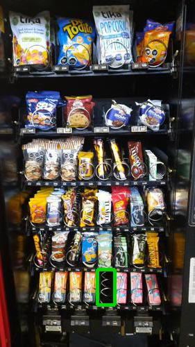
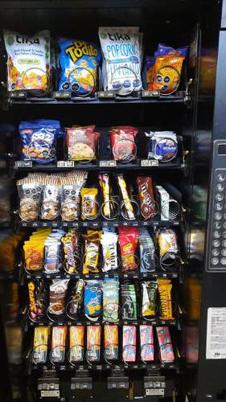

Antes de AbastecerSe detectó 1 espiral vacio.

id 381.195 |
Luego de AbastecerNo se detectaron espirales vacios.

id 381.196 |
|
| Fecha |
Reporte |
Vacios ANT |
% Abast |
% Quiebre |
Sum QTY |
Rotación Diaria |
Abast hace (días) |
| 27-07-2021 |
Viendo |
1 |
5.0 |
2.5 |
25 |
25 |
1 |
| 26-07-2021 |
Ver |
3 |
13.5 |
7.5 |
68 |
22 |
3 |
| 23-07-2021 |
Ver |
2 |
9.3 |
5.0 |
47 |
47 |
1 |
| 22-07-2021 |
Ver |
0 |
7.9 |
0 |
40 |
40 |
1 |
| 21-07-2021 |
Ver |
1 |
0 |
2.5 |
0 |
0 |
1 |
| 20-07-2021 |
Ver |
0 |
2.0 |
0 |
10 |
10 |
1 |
|
|
|
Se abasteció la máquina con:
Total de 25 unidades de 4 productos.
| Qty. |
Producto |
SubFamilia |
Familia |
| 6 |
Brownie Nutrabien Display |
Brownie |
Snack |
| 6 |
Tuareg Coco Indiv. 24X48 |
Galletas |
Snack |
| 7 |
Papas Fritas Tika Patagon |
Salados |
Snack |
| 6 |
Papas Nativas Andina Tika |
Salados |
Snack |
| Productos más abastecidos en últimas 6 semanas:
| Nro. Abast |
Qty/Abast |
Producto |
Abast hace (días) |
Fecha |
| 19 |
7 |
Galleta Din Don 24Ux46Gr |
1 |
26-07-2021 |
| 18 |
9 |
Tuareg Coco Indiv. 24X48 |
0 |
27-07-2021 |
| 16 |
14 |
Super Ocho Clasico 24 Gr |
1 |
26-07-2021 |
| 10 |
8 |
Brownie Choc 24Un Nutrabi |
1 |
26-07-2021 |
| 10 |
6 |
Selz Cracker |
14 |
13-07-2021 |
| Productos menos abastecidos en últimas 6 semanas:
| Nro. Abast |
Qty/Abast |
Producto |
Abast hace (días) |
Fecha |
| 1 |
4 |
Tika Pop Caramelo & Sal D |
42 |
15-06-2021 |
| 1 |
5 |
Tika Pop Coco Caramelo & |
42 |
15-06-2021 |
| 1 |
5 |
Snickers 53 Grs |
14 |
13-07-2021 |
| 1 |
6 |
Mani Crocante Pettiz 50Gr |
40 |
17-06-2021 |
| 1 |
7 |
Snack Mix Marco Polo 45Gr |
26 |
01-07-2021 |
|
|